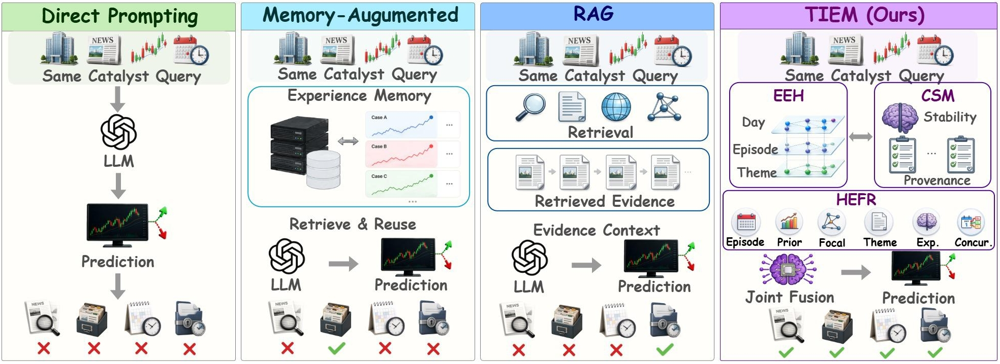
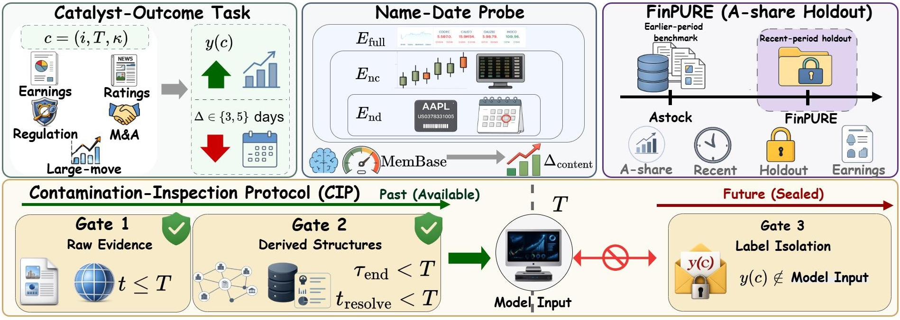
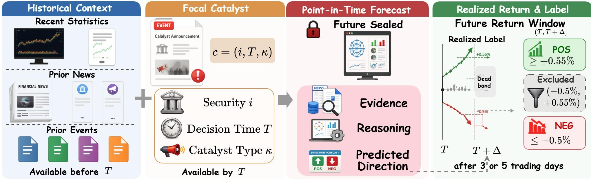

Event-Evidence Hypergraph
Organizes focal events and their temporal, entity, and semantic relations for structured retrieval.
Overview
TIEM is a point-in-time-audited framework for event-driven financial forecasting. It combines timestamp-filtered Event-Evidence Hypergraph (EEH) retrieval, provenance-tagged Causal Skill Memory (CSM), and Heterogeneous Evidence-Experience Fusion Reasoning (HEFR) to predict catalyst outcomes without using information unavailable at the decision time.
A catalyst query is anchored by its target stock, catalyst type, and decision time. EEH retrieves only past evidence, HEFR builds a unified reasoning context, and CSM supplies reusable causal skills learned from already realized outcomes.
How it works
TIEM makes every forecast temporally valid, traceable, and reusable.
Organizes focal events and their temporal, entity, and semantic relations for structured retrieval.
Validates retrieved skills against current evidence before producing an auditable direction forecast.
Stores provenance-aware forecasting experience only after outcomes are revealed.

Evaluation
In-distribution, recent-period, cross-market, and temporal out-of-distribution settings.


Research artifact
BibTeX metadata will be added when the paper record is publicly available.
Questions: wenjinliu23@outlook.com
@misc{tiem,
title = {TIEM: Temporal Integration of Hypergraph Evidence and
Skill Memory for Event-Driven Financial Forecasting},
note = {Project page: https://qwenqking.github.io/Fin_TIEM/}
}